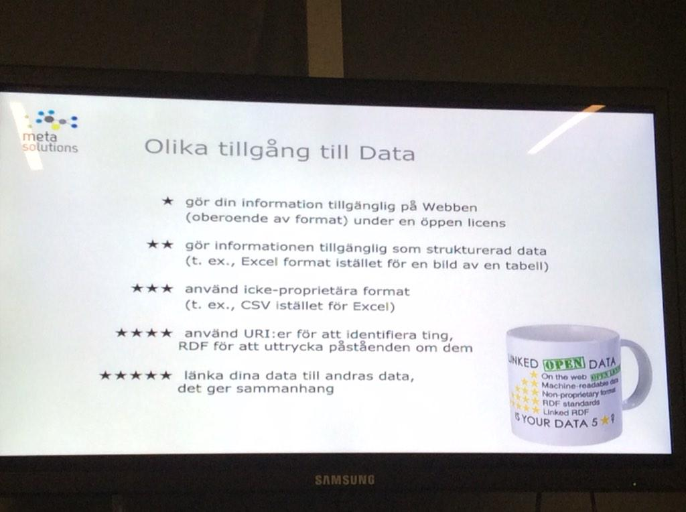

December 2014
"People have the right to see how their data is being used." --@timberners_lee cnn.it/1A0bAO5 via @cnni @webfoundation
Exactly 2 years ago I wrote a blog post: My MOOCs. So, today is a good time to follow up and list my MOOCs for 2015 medium.com/@kerfors/my-mo…
I'm not totally happy with Google's @Blogger kerfors.blogspot.com so I posted by recent blog post on @Medium medium.com/@kerfors/my-mo…
Do you know who was the first person to tweet "Massive Online Open Course" ctrlq.org/first/36481-ma… #FirstTweet #MOOC via @labnol
MT @egonwillighagen: looking for the first use ever of "Linked Open Data"... link?” <- #FirstTweet ctrlq.org/first/36473-li…
Next time someone accuses you of procrastination, say "no, I am not procrastinating, I am 'Late Binding.' " @jnd1er jnd.org/dn.mss/why_pro…
How I did on Twitter this week: 1 New Followers, 6 Mentions, 8.64K Mention Reach. How'd your week go? via sumall.com/myweek
+1 MT @vrandezo: We are looking for ontology engineers [#RDF/#OWL, #SPARQL, the #SemanticWeb] at Google google.com/about/careers/…
My best RTs this week came from: @HL7 @tomayac @frankolken @maxlath @narphorium #thankSAll via sumall.com/thankyou
I've registered for my 2nd MOOC from @ShefUniOnline "Measuring and Valuing Health" youtube.com/watch?v=TZixOJ…
This will be interesting to follow 2015: "a new API for entity search powered by Google's Knowledge Graph" plus.google.com/u/0/1099368369…
"semantic web and linked data concepts such as ontologies and RDF" #ITJob at @GSK ift.tt/1IYVB70 via @ericaxel
Super cool -> RT @wikidata: Welcome, Freebase! groups.google.com/forum/#!topic/… wikidata.org/wiki/Wikidata:… #wikidata
PICO ontology 4 components of a clinical question: Patient (Population or Problem), Intervention, Comparison, Outcome data.cochrane.org/ontologies/pico
Great discussions in RDF for Semantic Interoperabilityp (or RDF group), sub-group of HL7 ITS wiki.hl7.org/index.php?titl… #HL7 #FHIR
+1 MT @Wittylama: Excellent slidedeck introducing the intricacies of @wikidata: slideshare.net/_emw/up-and-ru… #wikidata
Interesting -> MT @cygri: I'm joining @TopQuadrant and their mission to bring #semanticweb to the enterprise.
@mavergames I'm trying to attend joint HL7 ITS / W3C HCLS "RDF for Semantic Interoperability" wiki.hl7.org/index.php?titl…
How I did on Twitter this week: 8 New Followers, 3 Mentions, 6.31K Mention Reach. How'd your week go? via sumall.com/myweek
Bookmarked: "Deficiencies in the transfer and availability of clinical trials evidence: a review of existing sys... ift.tt/1sjrgLv
Summer 2013 I learned some MapReduce and Hadoop in a MOOC. Spring 2015 I look forward to learn some @ApacheSpark databricks.com/blog/2014/12/0…
I've signed up for @edXOnline MOOC on Spark edx.org/course/introdu… So, now I need to get up to speed with Phython ai.berkeley.edu/tutorial.html#…
Excellent presentation by Claude Nanjo Achieving Clinical Knowledge Convergence and Interop [video]
semanticweb.com/webinar-yosemi… HT @SemanticWeb
semanticweb.com/webinar-yosemi… HT @SemanticWeb
Läs mera om #LankadeData lankadedata.se/vitbok/ tips på @dataforeningen's seminarium ikväll med @metasolutions

+1 RT @bill_slawski: Semantic Web: business models from a marketing perspective stateofdigital.com/semantic-web-b… via @stateofdigital
Dataföreningen: Länkade Data - Vad, varför och hur Göteborg, Lindholmen, nu på onsdag 10 dec #lankadedata natverk.dfs.se/node/27373
Reading @karencoyle's on classes in RDF tinyurl.com/nd337x9 "not hierarchies, nor classifications, properties defines classes"
MT @cochranecollab: #CochraneTech team seeks Web Appl Dev ow.ly/FvXk3 "Familiarity with #linkeddata tech (RDF, SPARQL, OWL)"
How I did on Twitter this week: 6 New Followers, 4 Mentions, 2.54K Mention Reach. How'd your week go? via sumall.com/myweek
I've applied to the #snomedct foundation free, online course ihtsdo.org/news-articles/… HT @annaadelof
+1 RT @philarcher1: #LinkedData uses the concepts and technologies of the Web to describe the world (no acronyms, no tech terms, one tweet)
@PHUSETwitta "Realtime data streams" using @apachekafka @confluentinc in #MOOCT Massive Open Online Clinical Trials medium.com/@kerfors/parti…
Haven't seen this before (HT @CMaudry): Free online #LinkedData course offered by @euclid_project euclid-project.eu (scroll down)
Bookmarked: "The Clinical Trials Transformation Initiative: innovation through collaboration" on CiteUlike ift.tt/1wmolCs
Very nice pilot study website: lvjjstudy.com Backstory portal.lillycoi.com/2014/11/24/ano… from @Lilly_COI